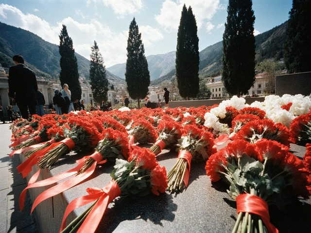
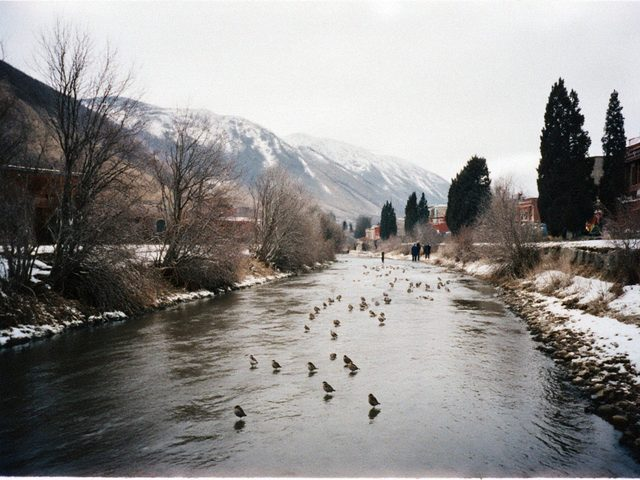

Oct312026
Saturday, October 31st, 2026 at 7:10 pm by Viktor Ivanovich
Yesterday I went to the theatre, first time since Lyudmila. Our Russian Drama on the Central Square has a new production, "Guilty Without Guilt" by Ostrovsky, the premiere was on the 15th. Lyudmila loved Ostrovsky, she said he writes about money and nobody else is so honest about money. I took the ticket for 250 som in the tenth row, on the left side, where we always sat.
Kruchinina was played by Mamedova, the same actress we saw in the nineties as the young girl in "The Forest". Now she is the mother. In the third act half of the hall was crying, and the man next to me also, who pretended that he has a cold. I will not say about myself.
The theatre now has its own internet page with all the performances for the month: nurzhan-drama.korkom.org. Very simple, no music playing, no pictures jumping, I approve. In November there is "Three Sisters" twice. I will go and I will take Kolya, he can also pretend he has a cold.
Posted in Life | 2 Comments »
Sep262026
Saturday, September 26th, 2026 at 11:20 am by Viktor Ivanovich
Dima writes about the "Tulparcoin": he says do not touch it, not a coin, not a cent, and do not let the neighbours tell me about it. I said: I have no money to touch. He answered: that is exactly the point, Ded.
I am more interested in the plan for the visit. The boy was born on the 9th of June, and in the photographs he looks like Dima at the same age, which means like a small angry engineer. They arrive on the 12th of December, by the Almaty plane and a car through the border (still no airport, I will never stop saying it). We will have a baby in the flat, in the same room where Dima slept as a child. I need to buy a new mattress and to remove the old heater. Also to remember how to hold a baby: I held Dima in 1994 and he was lighter than a bag of cement, but just as loud.
Posted in Life | 2 Comments »
Aug162026
Sunday, August 16th, 2026 at 10:05 am by Viktor Ivanovich
Dima writes from Surgut: "Ded, your blog opens again! I read three years in one night." So the technical works are finished. Hello, Dima. Hello, Valentina. Hello also to any new readers: the blog of an old man from Nurzhan, 86 years, still working, like the old refinery.
Tomatoes this year very good. The yellow ones especially.
Posted in Life | 2 Comments »
Jan232026
Friday, January 23rd, 2026 at 3:10 pm by Viktor Ivanovich
In the night the frost was minus 27. In the morning no internet, and the mobile also bad, one stick, then nothing. I thought my old computer finally died, and I was ready to call Dima in Surgut and cry.
But Dima showed me last year a page where Attelkom writes what is broken: status.attelkom.net. I went to the neighbour with the phone that still caught the signal, and there it was: "interruption of power supply at the Severo-Vostok node", the batteries exhausted, a generator on the way. So the internet also sits without electricity, like us in the nineties. At half past eleven it came back.
At the refinery we wrote the same in the shift log: what failed, when, what we did. Nobody read it either. But it is correct to write it.
Posted in Life | No Comments »
May92025
Friday, May 9th, 2025 at 7:00 pm by Viktor Ivanovich
The eighty years. I went to the Eternal Fire with my father's photograph, as every year, but this time I carried it in a small frame, because the large one is too heavy for my arm. A girl from the school asked to photograph us, the old man with the old man in the frame. I said yes. A strange thing to see yourself as a symbol.

Carnations at the Eternal Fire, 9 May.My neighbour's son, the soldier, brought flowers to the wall of the names. I think the memory is in good hands.
Posted in Life | 1 Comment »
Mar242024
Sunday, March 24th, 2024 at 12:00 pm by Viktor Ivanovich
The technical works on the international channel are in the sixth month now. I write for the Irad readers and for the future, a post in a bottle. In Nurzhan the spring comes the old way: first the mud, then the sparrows, then the first dandelion on the south side of the refinery fence.

The Chu in March: mud, sparrows and a bit of sun.I counted: 5 pensioners in our entrance, and 3 of them use the internet. This is progress. The fourth uses it only for the football. The fifth sits on the bench and has all the news without a screen.
Posted in Life | No Comments »
Nov122023
Sunday, November 12th, 2023 at 11:30 am by Viktor Ivanovich
Some days in October the mobile internet in Talas was switched off, I read in the newspaper. In Nurzhan my home internet works. But now Dima writes from Surgut that my blog "does not open, there is a page about technical works". So my readers abroad (two: Dima and Valentina in Krasnoyarsk) cannot read. Hello to you anyway. I will write. Maybe later you read it all together, like a book.
Posted in Life | No Comments »
Aug292021
Sunday, August 29th, 2021 at 5:50 pm by Viktor Ivanovich
Many words this month on the radio about the Afghan people who go through Talas, the airplanes and the buses, and the volunteers. Our neighbour from the second floor went to Talas for three days with the volunteers who met the airplanes. She told me that the women brought bread and the children brought drawings. I do not write more. We were all once the people with two suitcases, ours or our parents'.
Next to my door a box now stands for the clothes, and Lyudmila's red scarves are there. I think she would agree.
Posted in Life | No Comments »
Apr122020
Sunday, April 12th, 2020 at 1:15 pm by Viktor Ivanovich
Since March they closed everything. No marshrutkas, the trolleybus only for doctors, checkpoints at the city exits. I am at the dacha with permission from the cooperative chairman (he wrote me a paper that I am "agricultural worker"). Only me and the cat.
Dima calls every evening on the video. He is in Surgut now, an engineer. He says in Russia the same. The whole world sits at the dacha.
Posted in Life | 1 Comment »
Apr142019
Sunday, April 14th, 2019 at 11:30 am by Viktor Ivanovich
Dima sent me a present from Novosibirsk with the post: a smartphone, a plain one, with a big screen and a leather case. I resisted for a week. Now I have the "Tulpar" on it, which Dima installed, and I look at the news and the weather and the price of petrol, and, truthfully, also at the pictures of cats.
My first message there was "Hello". The answer came after eleven seconds: "Hello, uncle! Welcome!" from somebody called Svetlana N. in the Nurzhan room I did not know where to put my hands. A strange feeling: in 1959 we sent the telegrams, and now a stranger welcomes me and I did not even pay.
Posted in Life | 2 Comments »
Apr122018
Thursday, April 12th, 2018 at 8:20 pm by Viktor Ivanovich
Today the radio told again that our Kobozev boy flew to the stars, in 1984. I was already a shift engineer, and the whole refinery had the television in the control room that day. The cosmonaut died last year in Moscow and they buried him in our city. His street is not far from our house.
I don't discuss the other things around his name, I'm a technical person. I only say that when a man from your town flies to the sky, you feel a little taller at the bus stop for a week.
Posted in Life | 1 Comment »
May92015
Saturday, May 9th, 2015 at 6:10 pm by Viktor Ivanovich
The band, the beret, the photograph of my father. The same as every year, but there were fewer old men this year and more small children with the flags. The war generation is over now, the children of the war are our age. The next in line is me. I stood a little straighter.
Posted in Life | No Comments »
Mar112015
Wednesday, March 11th, 2015 at 8:00 pm by Viktor Ivanovich
Dima writes me that Kündölük now accepts comments only from the people who have the Attelkom login. It is because of the spam: yesterday I counted 63 comments from the pharmacies in Europe. So now it is only for us, the locals, and for the friends who are not abroad. And I mean friends abroad can e-mail Dima, and he will tell me.
I'm not against. At the refinery we also had the gate with the pass. If somebody is serious, he will get the pass.
Posted in Life | 1 Comment »
May132014
Tuesday, May 13th, 2014 at 9:40 pm by Viktor Ivanovich
I will say only a little. On Sunday I did not go to the stadium. My ticket was in the drawer and Kolya called at noon: "Vitya, don't come, the mood is bad". We watched the first half on the old television at the Kotelnaya, and then it became clear, the people on the screen began to run. I walked home with my stick through the back streets.
I was a fan of "Neftyanik" from 1958, at the age of 18 I stood on the east stand with the boys of the refinery. Nobody threw anything but the sunflower husks. Something changed in the city. I do not know what to write. Maybe next time.
Posted in Life | 2 Comments »
Apr172011
Sunday, April 17th, 2011 at 11:10 am by Viktor Ivanovich
The computer is sick again. This time it shows the blue screen and the words "A problem has been detected". It is the first time a machine tells me politely.
Dima is in his last school year and has the exams, so I did not call. I wrote to Bekzhan in the comments in the old post and he told me what to do. Hold the button 10 seconds, wait, press again. Did it. It works. I sent the thank-you with the neighbour who goes to Talas on Monday: a jar of the apricot jam. I think this is the correct exchange rate: one fixed computer, one jar.
Posted in Life | 1 Comment »
May92010
Sunday, May 9th, 2010 at 8:00 pm by Viktor Ivanovich
Parade on Azatlık prospect. My father Ivan Sukhanov went in 1942 from the Kobozev station, came back in 1945 without two fingers, worked 30 years at the refinery. Today I went with his photograph, and Dima with me. A lot of young people this year, more than last year. The band of the refinery played "Den Pobedy" and I cried like a child, I am not ashamed.
In Kobozev the war was the factories: the evacuated plants, 12-hour shifts, the boys of 14 at the machines. My mother made shells. We must remember this also.
Posted in Life | 1 Comment »
Feb112010
Thursday, February 11th, 2010 at 10:10 pm by Viktor Ivanovich
Yesterday Lyudmila had the pressure, 190 over 110, and the ambulance did not come, the line was busy for forty minutes. In the end I called the taxi that I know, the driver is a calm man, he took us to the Polyclinic No. 4 in twelve minutes without taking money for the night rate. In the waiting room I told him I have a blog, and he said, "I also write on Kündölük, about the roads and the life of the driver, but nobody reads". I said, I read.
So thank you to the taxi driver. Lyudmila is at home and stable. The doctor, Zinaida Markovna Ahn, told her: salt, salt, salt. I told Lyudmila: you see, even in medicine they repeat three times.
Posted in Life | 2 Comments »
May22009
Saturday, May 2nd, 2009 at 3:15 pm by Viktor Ivanovich
I looked at the last post I made in March and decided: we survived. Lyudmila's cough is better since we are back in the flat, the neighbours downstairs have a new baby, and the cat came back from the dacha thinner but alive. A man should be grateful for the simple things.
The first of May there was no demonstration, only the music from the loudspeakers in the park and the children with balloons. I took my beret and went for a walk to the refinery fence. I counted the chimneys. All five working.
Posted in Life | 1 Comment »
Mar282009
Saturday, March 28th, 2009 at 5:00 pm by Viktor Ivanovich
Light all day since Monday! We went back to the flat. The first thing Lyudmila did: washing machine. The first thing I did: hot bath, one hour. Then I slept 11 hours.
They found my colleague Petrovich's mother in January, she died in her flat from the cold, 84 years. I did not write it then. Now I write it. Remember them.
Posted in Life | No Comments »
Jan122009
Monday, January 12th, 2009 at 1:40 pm by Viktor Ivanovich
Since December the light in the city is two hours in the morning and two hours in the evening, and the heat in the radiators is lukewarm. In our flat in Dastgoh +8 in the bedroom. Lyudmila has the bad lungs, so we moved to the dacha. There is the old "burzhuika" stove I made in 1992, for the same reason. History repeats, first as tragedy, second as tragedy also.
I write from the computer of my neighbour in the cooperative, he has a petrol generator and the dial-up. Dima is in the city, he brings bread and coal on Saturday.
They say on the radio the water in Toktogul is at the lowest. I worked my whole life with energy. I know you cannot argue with a reservoir.
Posted in Life | 2 Comments »
Dec312007
Monday, December 31st, 2007 at 4:20 pm by Viktor Ivanovich
A quiet New Year's eve. The shops in our street have been half empty since the summer, but Lyudmila found a chicken and a jar of the green peas, and the tangerines came from somebody's cousin. We have light now, with only two cuts this week, one hour each. I counted. It is a habit of a shift engineer: everything is written in the log.
This year was not an easy one for anybody in the country, and I will not write about it. It is in the log and the log stays in the drawer. I only say thank you to the neighbours who shared the coal in the autumn and to the doctor who came to the house at night in October.
Happy New Year, whoever reads. Health first. The rest we will arrange.
Posted in Life | 2 Comments »
Nov182007
Sunday, November 18th, 2007 at 7:40 pm by Viktor Ivanovich
Dima came on Sunday as he promised. Lesson one: the mouse. It has two buttons, left and right, and I must not press both together "like a pianist". Lesson two: the "Back" arrow. This is the best invention after the valve, because everything that I do wrong can be undone.
Lyudmila watched from the door with her arms crossed. At the end she asked what is the use of it. I said, I will write to the whole world. She said, the whole world is not waiting. Maybe so. But the counter shows 11 visitors already, and I know only three of them.
Posted in Life | 1 Comment »
Nov72007
Wednesday, November 7th, 2007 at 10:15 am by Viktor Ivanovich
Good day. Today is the 7th of November. In our time this was a holiday: the demonstration on Lenin square, the band of the refinery, my Lyudmila with red carnation. Now it is an ordinary Wednesday. So it is a good day to begin something new.
My grandson Dima made me this "blog". He says I can write anything and people will read it. I said, who will read an old man? He said, other old men. We will see.
Introduction: I was shift engineer at the refinery 38 years. I know how to make gasoline from crude oil. I do not know how to put a photograph here. Dima will teach.
Posted in Life | 2 Comments »